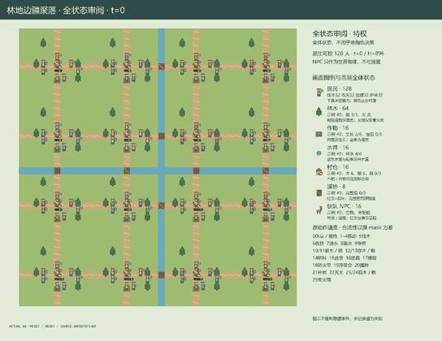

GI227 / SPATIAL
林地边疆聚落
128个角色生活在林地村落，采伐、种植、用水、火情和驮队运输改变彼此的行动条件。
Original saved demonstration
Recorded native state, often authored scripts or interventions; information scope and failures are preserved in the original provenance. This is a saved demonstration, not live browser play.

Run this game
crucibles play --game 227
Start Python locally, then open the address printed by the terminal. Installation, multiplayer, takeover and keyboard controls →
Objective, rewards & ending
Exact task contract
{
"objective": "Build and provision sixteen settlements while maintaining renewable woodland, crops, water and safe shared routes; trade local production against transport access and neighboring ecological costs.",
"natural_termination": "No early natural success/failure threshold. Persistent world changes continue until the896-turn season truncates. Incapacitated actors retain wait and can receive aid; terminal raw calls absorb.",
"interaction": "Cutting mature trees opens pack routes but changes delayed regrowth, local well recharge and fire exposure. Loaded NPC pack animals traverse shared trails and bridges. Equipment exchange, carried goods, shared aquifer flow, rescue, village upgrades and finite trade commissions create partner-dependent choices.",
"observation_access": "Static terrain is public. Dynamic groups use Manhattan radius5, distance then id order, with8 settlers,12 tree sites and3 per other group. Every visible scene attribute is in native observations; hidden slots are zero. Fire reports are locally posted information from a neighboring village and age over time."
}Declared per-step reward bounds: -1.0 to 4.0. Observability: partially_observable.
Rules
- Control any of128 settlers through the same native action interface. The16 pack animals are separate NPC objects.
- Walk on grass or trails and cross streams at usable bridges. Grass spends stamina; resting recovers it. Mature tree stage3 blocks passage.
- Chop with an axe to obtain timber and open a route. Living cut trees regrow after eligible24-turn periods; bare stumps require replanting.
- Mature neighboring woodland supports well recharge. Wells exchange water west-to-east along village rows, so local withdrawals can affect neighbors.
- Buckets fill at wells, irrigate crops or extinguish trees. Hoes tend and seed crops. Exchange tools with a waiting neighbor to change work capability.
- Shared trails carry loaded pack animals one cell per turn. Trees, broken bridges, other animals and settlers can block them; village docks allow co-location.
- Timber and food remain in inventories, stores or moving shipments. Only finite matching trade orders pay shipment commissions.
- Dry woodland can ignite and spread fire eastward. Fire consumes trees and damages nearby crops; smoke drains stamina and can injure settlers.
- Firebreaks stop growth and fire at that tree site; replanting reverses them. Injured neighbors can be aided with carried food or water.
- Work targets the nearest corresponding object within distance one. Clock-rotating actor order resolves contention, then pack movement and ecology run.
- Role views show radius-five local entities with declared slot limits. Nearby fire reports can be posted to the neighboring village and become stale.
- The896-turn season ends by truncation. This declarative scene is not an executed animation or evidence of learning.
Original mechanism document (historical status wording retained)
# Forest Frontier Commons **AUTHORED_NOT_EXECUTED** — A128 / O321 / U26 / H896. No candidate execution, numerical acceptance, replay, trained policy, human session or transfer result is claimed. ## Native world and population Sixteen eight-person settlements occupy a40x40 bounded, connected woodland. There are128 actual independently controllable native agent rows: two woodcutters, farmers, courier/builders and rangers per village. Professions describe initial specialities; exchangeable axes, hoes and buckets determine abilities. The16 pack animals are separate NPC shipment objects and are not counted among128. The world has64 persistent tree sites,16 crop plots/wells/stores,8 stream bridges and connected orthogonal trail rows/columns. Village centers are spaced10 cells apart. Trees of height3 physically block entry; chopping to2 opens the same cell to settlers and pack animals. The public map supplies actual trail/stream geometry, while tree state supplies dynamic obstruction. Source: candidate.py:32-78, candidate.py:122-128. Agents carry bounded timber, food and water; tools are persistent state. Stores start with six timber/food. Couriers start with two timber; farmers/rangers carry one food, rangers one water. Trees start mature, crops at stage2 but dry, wells at4. Some bridges are broken. These are original deterministic constants, not seed-search outcomes. ## Actions and step order 0 rest;1–4 cardinal movement;5 chop;6 harvest;7 irrigate;8 fill bucket;9 bridge repair;10/11 load timber/food onto a home-idle pack animal;12/13 deposit timber/food;14 tend crop;15 eat to recover;16 swap equipment;17 aid an injured neighbor;18 make firebreak;19 upgrade store;20 seed crop;21 replant tree;22 extinguish;23/24 withdraw timber/food;25 send a nearby-fire reading to the next village in the row. Every action id has an implemented affordance. Source: candidate.py:130-163, candidate.py:165-261. Work uses the nearest object of the appropriate group within Manhattan distance1; id resolves ties. A nearby ineligible object may require repositioning. Waiting accepts a tool swap with the lowest-id eligible neighbor, at most one exchange per actor per turn. Aid chooses the lowest-id injured adjacent settler and consumes food first, otherwise water. This is a contextual action protocol, not an implemented free-text agreement system. Input legality is checked first; invalid commands become0. Actor intents resolve in order(old_t+k) mod128 with updated resource/target checks. Each tree can be chopped at most once that turn; contention can waste a legal intent. Citizen occupancy is exclusive. Moving on meadow costs one stamina; trails cost none. Wait recovers one stamina. Eating consumes food and restores health/stamina. At health0 only wait is legal; another settler can restore health, or a waiting injured settler at a store can consume store food every16 turns. Actors are never removed. Source: candidate.py:165-261, candidate.py:295-352. After actors,16 pack animals resolve in rotating order, then ecology updates. Loaded animals move at most one actual horizontal trail cell toward the next village in their row, unload if storage permits, and return home empty before accepting another load. Trees, streams/broken bridges, settlers and other animals block trail movement. Store docks permit co-location, so a parked destination animal does not force all villages to launch at once. Source: candidate.py:263-293. ## Ecology and multi-agent consequences Chopping yields one timber, reduces height and resets regrowth age. A living height1/2 tree ages only when not burning/firebroken, its village well has water, and at least two mature trees lie within distance6. Each24 eligible turns adds a stage. Bare stumps require replanting with food seed. A site can regrow under an occupant; it prevents later entry, while the occupant may leave. Source: candidate.py:165-261, candidate.py:295-352, candidate.py:122-128. A well recharges by one every10 turns if at least two mature trees lie within distance6. Simultaneous aquifer flow moves one unit west-to-east across each neighboring pair whose level difference is at least2. Drawing water, cutting cover and preserving woodland thus affect another settler's later water opportunities. Watering spends a carried bucket unit to add two soil moisture, capped3. Wet crops naturally grow every6 turns; hoe tending adds growth immediately; soil decays every12. Harvest at6 supplies two food and clears the plot, which then needs seed. Source: candidate.py:165-261, candidate.py:295-352. Every64 turns a deterministic spark visits a declared tree index. It ignites only mature, dry, non-firebroken woodland; dryness means its owner well has less than6 water. Existing fire can spread to tree sites within Manhattan4 at equal/eastern x, one ecology update at a time. Fire consumes one stage every4 turns. Trees reaching0 stop burning. Nearby crop plots lose growth; smoke within distance3 drains stamina and injures every8 turns. Firebreaks consume timber and clear the site, preventing fire/regrowth until replanted. Bucket water extinguishes; source fire may later spread again. These are actual conditional transitions, not promised ambient animations. Source: candidate.py:295-352, candidate.py:165-261. Important partner-dependent choices: clearing a shipment route versus preserving mature cover/recharge; sending timber versus retaining it for crossings/firebreaks; spending water on crops versus firefighting or keeping a moist woodland; loaning equipment to relieve a local bottleneck; opening a stream crossing versus walking to another bridge; and rescue versus saving supplies. Local pairs can farm or clear routes while everyone else waits. Cross-village traffic, aquifer flow, fires and finite commissions prevent an interpretation as128 independent single-player copies. No all-to-all interaction or all128-action requirement is imposed. ## Local observation and faithful scene The321-column native observation contains12 self/public fields and capped local entity slots:8 settlers,12 tree sites and3 each of crops, wells, villages, bridges and pack animals. Visibility is Manhattan5, sorted by distance then id. Every slot has seen and all visible render attributes; unseen slots are zero. Source: candidate.py:12-19, candidate.py:21-30, candidate.py:80-87, candidate.py:89-116. Fire reports copy the sender's radius-five burning-tree count, capped4, into the next village board; age increments to896. They convey local information but not a global map of fires. Public terrain is static. Dynamic tree stage, fire, crop moisture, stocks, bridges, carried goods and moving shipments come only from native state. Scene events are levels of already-observed fields. Per-step diagnostic flags remain full-state diagnostics, not extra information in a role view. The visual family is warm rural farming/woodland, separate from the canal federation's territorial water infrastructure. Metadata identifies villages/roles and camera focus suitable for selecting one or multiple human actors. It does not claim a shipped UI, rendered frames or actual human play. The frontend must use this same kernel and legal masks, and label any privileged full-state view as debug. ## Reward components and ranges Six float32 columns sum to native reward: 1. Actor−0.01 for successful chopping, watering, bridge repair, firebreak, upgrade, planting/seeding, extinguishing, aid or eating. 2. Actor+0.16 per two-food harvest; aid gives helper and injured recipient+0.02 each. 3. Every beneficiary-village member+0.06 per store upgrade; settlers within5 of a repaired bridge+0.005. 4. A matching finite shipment commission gives each recipient member+0.08 and home-village member+0.04. Required cargo is1+destination mod2; orders start4 and decrement permanently. 5. Each member of an extinguished tree's owner village+0.02; each newly rematured tree gives that village+0.002. 6. Smoke injury costs the injured actor0.03; each burning tree-stage loss costs its village members0.02; a local crop loss costs each member0.01. Sources: candidate.py:165-261, candidate.py:263-293, candidate.py:295-352. Manual transfers/withdrawals, merely loading and idle status pay nothing. Store upgrades consume two carried timber and one food; facilities cap3. Orders are not replenished, avoiding a paid withdraw/redeposit loop. Renewable harvest/forest production still has real time, water and resource consequences. A conservative lower bound is−0.13: one0.01 expenditure,0.03 injury, at most four own-village tree losses0.08, and0.01 crop loss; manifest−1 safely covers it. An intentionally loose upper bound sums0.16 harvest +0.02 helping +0.06 received aid +0.18 village upgrades +0.12 all24 bridge increments +1.92 all16 possible commissions +0.08 own-village extinguishing +0.008 own-village rematuration =2.548, below manifest4. These analytic envelopes are not measured returns or success criteria. ## Episode and invariants There is no forced early success/failure endpoint. The896-turn season truncates; construction/harvest does not reset the world. A live call increments t once. Already-terminal raw calls preserve state and observation, return zero reward/all dones, and retain causes. Natural priority holds with terminated always false. Source: candidate.py:295-352, candidate.py:354-356, candidate.py:358-362. Declared invariants awaiting independent checking: unique in-bounds settler positions; fixed entity capacities; inventories timber/food0–3, water0–2; health0–3/stamina0–6; tree0–3, age0–24; wells0–8; crops0–6/moisture0–3; stores0–32; facilities0–3; orders0–4; bridge0–3; pack cargo0/1/2 and phase0/1/2. All visible values normalize into[0,1]. Int32 counters/coordinates, bool masks and float32 observations/rewards follow the boundary. The external PRNG key is accepted but this original scenario is deterministic. ## Literal scripts and single-action falsification Two seed0 scripts are unexecuted local proposals. The first chops tree0, loads pack animal0 and clears the next trail cell; the second has a ranger fetch water and irrigate while a farmer tends/harvests. Neither proves a complete delivery, solvability or learning. Paired branches share the empty prefix and identical subsequent commands. Only actor0's first action changes: chop5 versus wait0. Actor2 loads timber in both; actor0 moves north on step2 in both. From source reasoning, the loaded animal should encounter tree0's cell on step3: the cut branch may permit entry while the uncut branch stalls. Comparison targets the other actor2's visible shipment information, native cart position/stalled/cargo and tree height. No effect magnitude or observed success is recorded. Independent replay may falsify legality, timing or the proposed contrast. ## Provenance Only current clean226/227 inputs and named official snapshots were read. Population223 controls96/128, with no future population ceiling. Earlier population197/203 payloads, project history, other candidates/results, final-test/heldout data and memory were not used. No network/model API or resource probe occurred. JaxMARL/Pgx API concepts, Craftax bounded persistence/local visibility and PureJaxRL/Craftax baseline integration context informed the design; no upstream code, art, layouts, weights or benchmark/training results were copied. Input hashes are in author_input_freeze.json; output identities and Astra/max self-report in generation_record.json; parent dispatch independently retains model assignment. Text/JSON/AST/hash checks do not establish source validation, numerical parity, native animation, scalable throughput, human playability, learnability, successful learning, non-isomorphism or transfer.
Commands
Roles & abilities
agent_000 village_00_woodcutter_0
agent_001 village_00_farmer_0
agent_002 village_00_courier_builder_0
agent_003 village_00_ranger_0
agent_004 village_00_woodcutter_1
agent_005 village_00_farmer_1
agent_006 village_00_courier_builder_1
agent_007 village_00_ranger_1
agent_008 village_01_woodcutter_0
agent_009 village_01_farmer_0
agent_010 village_01_courier_builder_0
agent_011 village_01_ranger_0
agent_012 village_01_woodcutter_1
agent_013 village_01_farmer_1
agent_014 village_01_courier_builder_1
agent_015 village_01_ranger_1
agent_016 village_02_woodcutter_0
agent_017 village_02_farmer_0
agent_018 village_02_courier_builder_0
agent_019 village_02_ranger_0
agent_020 village_02_woodcutter_1
agent_021 village_02_farmer_1
agent_022 village_02_courier_builder_1
agent_023 village_02_ranger_1
agent_024 village_03_woodcutter_0
agent_025 village_03_farmer_0
agent_026 village_03_courier_builder_0
agent_027 village_03_ranger_0
agent_028 village_03_woodcutter_1
agent_029 village_03_farmer_1
agent_030 village_03_courier_builder_1
agent_031 village_03_ranger_1
agent_032 village_04_woodcutter_0
agent_033 village_04_farmer_0
agent_034 village_04_courier_builder_0
agent_035 village_04_ranger_0
agent_036 village_04_woodcutter_1
agent_037 village_04_farmer_1
agent_038 village_04_courier_builder_1
agent_039 village_04_ranger_1
agent_040 village_05_woodcutter_0
agent_041 village_05_farmer_0
agent_042 village_05_courier_builder_0
agent_043 village_05_ranger_0
agent_044 village_05_woodcutter_1
agent_045 village_05_farmer_1
agent_046 village_05_courier_builder_1
agent_047 village_05_ranger_1
agent_048 village_06_woodcutter_0
agent_049 village_06_farmer_0
agent_050 village_06_courier_builder_0
agent_051 village_06_ranger_0
agent_052 village_06_woodcutter_1
agent_053 village_06_farmer_1
agent_054 village_06_courier_builder_1
agent_055 village_06_ranger_1
agent_056 village_07_woodcutter_0
agent_057 village_07_farmer_0
agent_058 village_07_courier_builder_0
agent_059 village_07_ranger_0
agent_060 village_07_woodcutter_1
agent_061 village_07_farmer_1
agent_062 village_07_courier_builder_1
agent_063 village_07_ranger_1
agent_064 village_08_woodcutter_0
agent_065 village_08_farmer_0
agent_066 village_08_courier_builder_0
agent_067 village_08_ranger_0
agent_068 village_08_woodcutter_1
agent_069 village_08_farmer_1
agent_070 village_08_courier_builder_1
agent_071 village_08_ranger_1
agent_072 village_09_woodcutter_0
agent_073 village_09_farmer_0
agent_074 village_09_courier_builder_0
agent_075 village_09_ranger_0
agent_076 village_09_woodcutter_1
agent_077 village_09_farmer_1
agent_078 village_09_courier_builder_1
agent_079 village_09_ranger_1
agent_080 village_10_woodcutter_0
agent_081 village_10_farmer_0
agent_082 village_10_courier_builder_0
agent_083 village_10_ranger_0
agent_084 village_10_woodcutter_1
agent_085 village_10_farmer_1
agent_086 village_10_courier_builder_1
agent_087 village_10_ranger_1
agent_088 village_11_woodcutter_0
agent_089 village_11_farmer_0
agent_090 village_11_courier_builder_0
agent_091 village_11_ranger_0
agent_092 village_11_woodcutter_1
agent_093 village_11_farmer_1
agent_094 village_11_courier_builder_1
agent_095 village_11_ranger_1
agent_096 village_12_woodcutter_0
agent_097 village_12_farmer_0
agent_098 village_12_courier_builder_0
agent_099 village_12_ranger_0
agent_100 village_12_woodcutter_1
agent_101 village_12_farmer_1
agent_102 village_12_courier_builder_1
agent_103 village_12_ranger_1
agent_104 village_13_woodcutter_0
agent_105 village_13_farmer_0
agent_106 village_13_courier_builder_0
agent_107 village_13_ranger_0
agent_108 village_13_woodcutter_1
agent_109 village_13_farmer_1
agent_110 village_13_courier_builder_1
agent_111 village_13_ranger_1
agent_112 village_14_woodcutter_0
agent_113 village_14_farmer_0
agent_114 village_14_courier_builder_0
agent_115 village_14_ranger_0
agent_116 village_14_woodcutter_1
agent_117 village_14_farmer_1
agent_118 village_14_courier_builder_1
agent_119 village_14_ranger_1
agent_120 village_15_woodcutter_0
agent_121 village_15_farmer_0
agent_122 village_15_courier_builder_0
agent_123 village_15_ranger_0
agent_124 village_15_woodcutter_1
agent_125 village_15_farmer_1
agent_126 village_15_courier_builder_1
agent_127 village_15_ranger_1
Observation permissions
Training receives only the original observation rows. Role cameras use declared visibility; debug cameras are explicitly marked. Local benchmark records log debug exposure and role takeover history.
Exact observation layout
[
{
"slice": [
0,
1
],
"meaning": "Public season clock t/896.",
"visibility": "public"
},
{
"slice": [
1,
12
],
"meaning": "Self x/39, y/39, village/15, profession/3, tool/3, timber/3, food/3, water/2, health/3, stamina/6, nearby burning-tree count/64.",
"visibility": "self"
},
{
"slice": [
12,
108
],
"meaning": "8 settler slots, each: seen, id/127, x/39, y/39, village/15, profession/3, tool/3, timber/3, food/3, water/2, health/3, stamina/6.",
"visibility": "local"
},
{
"slice": [
108,
216
],
"meaning": "12 woodland slots, each: seen, id/63, x/39, y/39, height/3, fire, firebreak, regrowth age/24, owner/15.",
"visibility": "local"
},
{
"slice": [
216,
234
],
"meaning": "3 crop slots, each: seen, id/15, x/39, y/39, growth/6, moisture/3.",
"visibility": "local"
},
{
"slice": [
234,
249
],
"meaning": "3 well slots, each: seen, id/15, x/39, y/39, water/8.",
"visibility": "local"
},
{
"slice": [
249,
279
],
"meaning": "3 village slots, each: seen, id/15, x/39, y/39, timber stock/32, food stock/32, facility/3, orders/4, fire report/4, report age/896.",
"visibility": "local"
},
{
"slice": [
279,
294
],
"meaning": "3 bridge slots, each: seen, id/7, x/39, y/39, strength/3.",
"visibility": "local"
},
{
"slice": [
294,
321
],
"meaning": "3 pack-animal slots, each: seen, id/15, x/39, y/39, cargo/2, phase/2, home/15, destination/15, stalled.",
"visibility": "local"
}
]Entity visibility & attributes
[
{
"id": "settlers",
"kind": "agent",
"count": 128,
"position": [
"pos"
],
"active": [
"active"
],
"visibility": [
"agent_visible"
],
"attributes": [
{
"state_path": [
"crew"
],
"meaning": "Village 0-15",
"display": "category"
},
{
"state_path": [
"profession"
],
"meaning": "0 woodcutter, 1 farmer, 2 courier, 3 ranger",
"display": "category"
},
{
"state_path": [
"tool"
],
"meaning": "1 axe, 2 hoe, 3 bucket",
"display": "category"
},
{
"state_path": [
"wood"
],
"meaning": "Carried timber 0-3",
"display": "number"
},
{
"state_path": [
"food"
],
"meaning": "Carried food 0-3",
"display": "number"
},
{
"state_path": [
"water"
],
"meaning": "Carried water 0-2",
"display": "number"
},
{
"state_path": [
"health"
],
"meaning": "Health 0-3",
"display": "bar"
},
{
"state_path": [
"stamina"
],
"meaning": "Stamina 0-6",
"display": "bar"
}
]
},
{
"id": "woodland",
"kind": "resource",
"count": 64,
"position": [
"tree_pos"
],
"active": [
"tree_active"
],
"visibility": [
"tree_visible"
],
"attributes": [
{
"state_path": [
"height"
],
"meaning": "Tree stage 0-3; stage3 blocks passage",
"display": "bar"
},
{
"state_path": [
"fire"
],
"meaning": "Currently burning",
"display": "flag"
},
{
"state_path": [
"firebreak"
],
"meaning": "Cleared firebreak",
"display": "flag"
},
{
"state_path": [
"regrow"
],
"meaning": "Current eligible regrowth age 0-24",
"display": "number"
},
{
"state_path": [
"tree_owner"
],
"meaning": "Ecological beneficiary village",
"display": "category"
}
]
},
{
"id": "crops",
"kind": "resource",
"count": 16,
"position": [
"field_pos"
],
"active": [
"village_active"
],
"visibility": [
"field_visible"
],
"attributes": [
{
"state_path": [
"growth"
],
"meaning": "Crop stage 0-6",
"display": "bar"
},
{
"state_path": [
"moisture"
],
"meaning": "Soil moisture 0-3",
"display": "bar"
}
]
},
{
"id": "wells",
"kind": "resource",
"count": 16,
"position": [
"well_pos"
],
"active": [
"village_active"
],
"visibility": [
"well_visible"
],
"attributes": [
{
"state_path": [
"well_water"
],
"meaning": "Well water 0-8",
"display": "bar"
}
]
},
{
"id": "villages",
"kind": "landmark",
"count": 16,
"position": [
"store_pos"
],
"active": [
"village_active"
],
"visibility": [
"store_visible"
],
"attributes": [
{
"state_path": [
"stock_wood"
],
"meaning": "Timber stock 0-32",
"display": "number"
},
{
"state_path": [
"stock_food"
],
"meaning": "Food stock 0-32",
"display": "number"
},
{
"state_path": [
"level"
],
"meaning": "Facility level 0-3",
"display": "category"
},
{
"state_path": [
"orders"
],
"meaning": "Remaining trade commissions 0-4",
"display": "number"
},
{
"state_path": [
"report"
],
"meaning": "Reported nearby fires 0-4",
"display": "number"
},
{
"state_path": [
"report_age"
],
"meaning": "Report age; 896 absent or stale",
"display": "number"
}
]
},
{
"id": "bridges",
"kind": "gate",
"count": 8,
"position": [
"bridge_pos"
],
"active": [
"bridge_active"
],
"visibility": [
"bridge_visible"
],
"attributes": [
{
"state_path": [
"bridge_health"
],
"meaning": "Bridge strength 0-3",
"display": "bar"
}
]
},
{
"id": "pack_animals",
"kind": "object",
"count": 16,
"position": [
"cart_pos"
],
"active": [
"village_active"
],
"visibility": [
"cart_visible"
],
"attributes": [
{
"state_path": [
"cart_cargo"
],
"meaning": "0 empty, 1 timber, 2 food",
"display": "category"
},
{
"state_path": [
"cart_phase"
],
"meaning": "0 home idle, 1 outbound, 2 returning",
"display": "category"
},
{
"state_path": [
"cart_home"
],
"meaning": "Home village",
"display": "category"
},
{
"state_path": [
"cart_target"
],
"meaning": "Current destination village",
"display": "category"
},
{
"state_path": [
"cart_stalled"
],
"meaning": "Currently unable to advance",
"display": "flag"
}
]
}
]Actual verification & provenance
Per-game execution receipt
{
"status": "PENDING"
}Chromium control verification
{
"status": "PENDING"
}Original identity and file hashes
{
"id": 227,
"key": "gi227",
"title": "林地边疆聚落",
"summary": "128个角色生活在林地村落，采伐、种植、用水、火情和驮队运输改变彼此的行动条件。",
"tags": [
"128角色",
"林地聚落",
"保存回放"
],
"family": "spatial",
"dimensions": {
"num_agents": 128,
"observation_size": 321,
"num_actions": 26,
"max_steps": 896
},
"source_sha256": "0dfe87d714ef6907e0e2fb30b8ed07b5357e832698e91cffc491441ec42ced06",
"manifest_sha256": "a2d425d03b46617d8186ffa69b5b091e82a2ae925e71b47749059bcef23f7b2e",
"files": [
{
"file": "candidate.py",
"sha256": "0dfe87d714ef6907e0e2fb30b8ed07b5357e832698e91cffc491441ec42ced06",
"bytes": 27080,
"origin": "work/exp_2/game_incubator_v3/sources/game-v3-00227/attempt_00/candidate.py"
},
{
"file": "manifest.json",
"sha256": "a2d425d03b46617d8186ffa69b5b091e82a2ae925e71b47749059bcef23f7b2e",
"bytes": 47431,
"origin": "work/exp_2/game_incubator_v3/sources/game-v3-00227/attempt_00/manifest.json"
},
{
"file": "scene.json",
"sha256": "d4011575148b473eb7f14ec48c50fbeb08bb1e3d43be4d157d04664a24f34ac4",
"bytes": 12374,
"origin": "work/exp_2/game_incubator_v3/sources/game-v3-00227/attempt_00/scene.json"
},
{
"file": "mechanism.md",
"sha256": "1c9a5da5d4b031a65da192f4d81f4f2f22fb5ea1aa30e38b0027a7e1b95aafb9",
"bytes": 11799,
"origin": "work/exp_2/game_incubator_v3/sources/game-v3-00227/attempt_00/mechanism.md"
},
{
"file": "playthrough.json",
"sha256": "f12798824365a868d31d240b0188392c558f1eebd627730315d86036f01ff2d3",
"bytes": 37968,
"origin": "work/exp_2/game_incubator_v3/sources/game-v3-00227/attempt_00/playthrough.json"
}
],
"original_status": "SOURCE_ONLY",
"original_saved_replay": true,
"release_validation": "PENDING",
"human_scores": null,
"browser_validation": "PENDING"
}